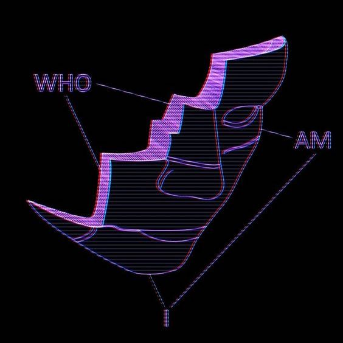
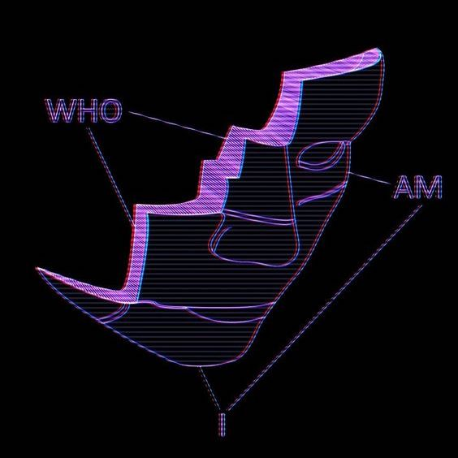

Com Truise is one of the many personas of producer and designer Seth Haley, born and raised in upstate New York and operating out of a 12’-overrun apartment in Princeton, New Jersey. An admitted synth obsessive, Com Truise is the maker of an experimental and bottom heavy style he calls “mid-fi synth-wave, slow-motion funk”.
While subliminally informed by both parental record collections and hints of faded electronics product design, Haley’s Com Truise project isn’t just nostalgia capitalization. Thereare fragments (read: DNA strands) of Joy Division, New Order, and the Cocteau Twins, but it’s like you’re hearing them through the motherboard of a waterlogged Xbox—demented and modern. He’s got a way of making familiar things sound beautifully hand-smeared.

 
